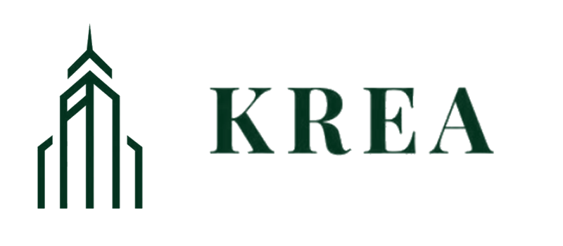
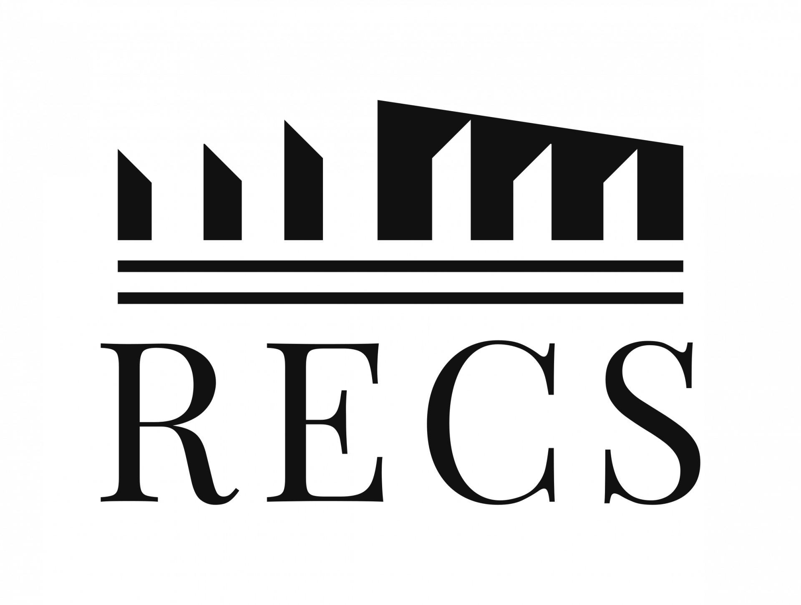

Sessions
Senior Session
직전 학기부터 활동했던 Senior 기수의 경험과 지식을 직접 전수받는 세션입니다. 부동산 전반에 대한 개념을 배우며, Junior 기수가 빠르게 기본기를 습득할 수 있도록 돕습니다


Sessions
직전 학기부터 활동했던 Senior 기수의 경험과 지식을 직접 전수받는 세션입니다. 부동산 전반에 대한 개념을 배우며, Junior 기수가 빠르게 기본기를 습득할 수 있도록 돕습니다
Sessions
도시공학과 현직자 선배님들의 부동산·금융 업계의 생생한 현장 이야기와 커리어 조언을 들을 수 있습니다. 또한 세션 이후에도 지속적으로 교류하며 네트워크를 확장할 수 있습니다.


Sessions
실제 부동산 거래 사례 조사, 자금 조달 구조 분석 등을 통해 현업에서 이뤄지는 프로세스를 직접 이해합니다. PF, 재건축, 금리, 주택시장 등 다양한 테마의 시사 이슈를 선정하여 발표·토론하며 인사이트를 공유합니다.


Sessions
다른 Session에서 함양한 지식을 바탕으로, 학기 중 두 차례 부동산 실물투자 및 개발 프로젝트를 진행합니다. 학회원들은 각각 운용사(실물 프로젝트), 증권사(개발 프로젝트) 입장에서 지정된 혹은 직접 선정한 자산에 대해 가상의 투자 제안서(IM)를 작성하고, 현업에 계신 멘토님의 피드백을 반영하여 최종 결과물을 발표합니다.


External Activities




Networking
부동산 및 금융 업계에 종사하고 계시는 도시공학과 선배님들과의 강력한 Networking 기회를 제공합니다. 학회원들은 실무적인 조언과 업계의 최신 트렌드를 접하며 실질적인 인사이트를 쌓을 수 있습니다. 또한, 선배님들의 경험을 바탕으로 커리어를 구체화하고, 업계에서 경쟁력 있는 인재로 성장할 수 있도록 지원합니다